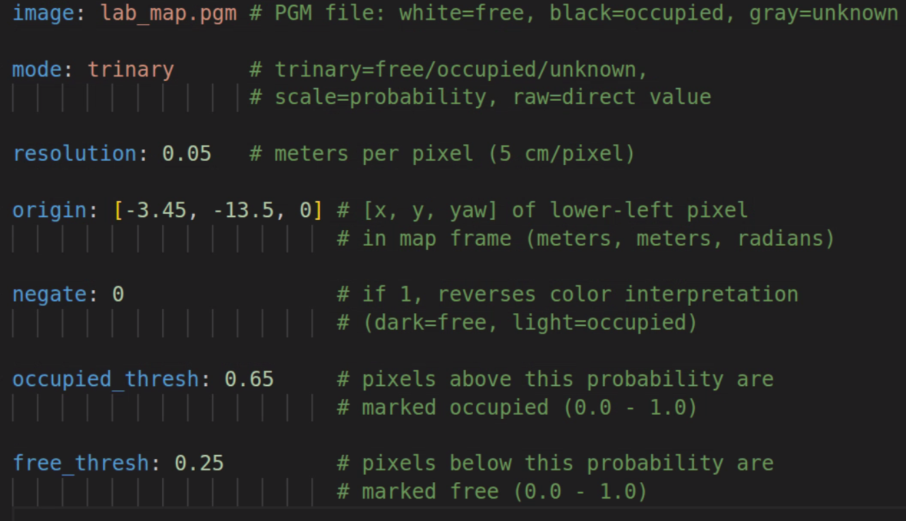
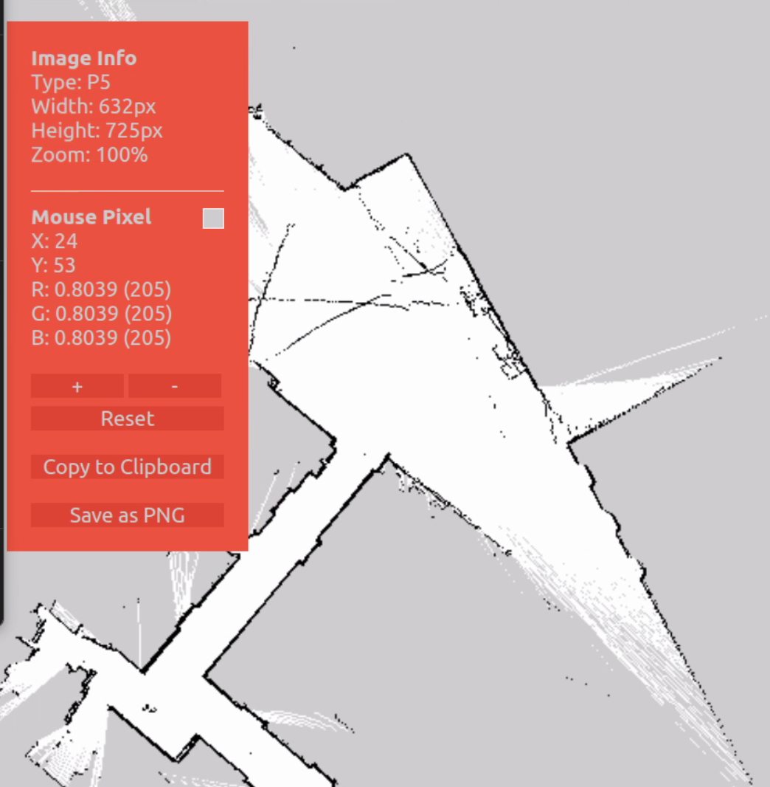
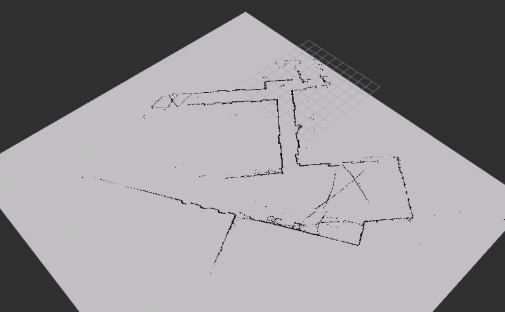
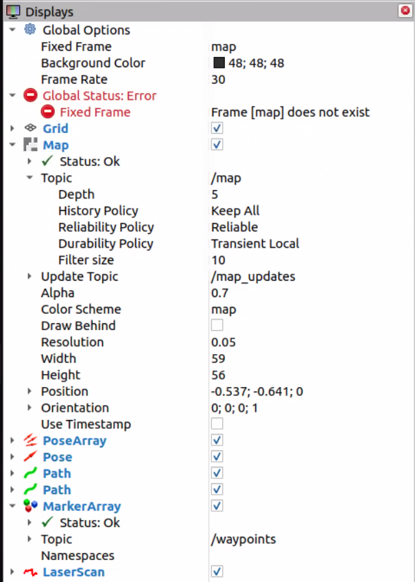

Saving the Map¶
Once you have finished building your map with SLAM Toolbox, you must save it for later use in localization or navigation.
🎥 Video Walkthrough¶
⚠️ Important¶
The car must remain powered on while saving.
SLAM Toolbox must still be running.
Do not close the SLAM terminal before saving the map.
Steps to Save the Map¶
1️⃣ Finish Driving the Map¶
Drive the vehicle through the entire area.
Make sure the loop is closed if possible.
Verify the map looks complete in RViz2.
2️⃣ Open a New Terminal¶
Open a new terminal on the RoboRacer:
cd ~/f1tenth_ws
source /opt/ros/humble/setup.bash
source install/setup.bash
3️⃣ Save the Map¶
In ROS 2 Humble, use the nav2_map_server package to save the map. Save it directly into the stack’s maps folder to avoid any extra move steps.
First, create the maps directory in the stack (if it does not already exist):
mkdir -p ~/f1tenth_ws/src/f1tenth_system/f1tenth_stack/maps
Then run the map saver command, saving directly into that folder:
ros2 run nav2_map_server map_saver_cli -f ~/f1tenth_ws/src/f1tenth_system/f1tenth_stack/maps/lab_map
Note
If you see Failed to spin map subscription, the map saver could not find the /map topic. If SLAM Toolbox is still running, try the save command again — it sometimes fails on the first attempt. If SLAM Toolbox was closed, you will need to restart it and rebuild the map before saving.
This will generate two files:
~/f1tenth_ws/src/f1tenth_system/f1tenth_stack/maps/lab_map.pgm
~/f1tenth_ws/src/f1tenth_system/f1tenth_stack/maps/lab_map.yaml
.pgm— grayscale occupancy grid image.yaml— metadata (resolution, origin, thresholds)


4️⃣ Verify the Map Was Saved¶
Check that both files exist:
ls ~/f1tenth_ws/src/f1tenth_system/f1tenth_stack/maps/
You should see:
lab_map.pgm
lab_map.yaml
Then open the yaml file and confirm the image: field matches the .pgm filename exactly:
cat ~/f1tenth_ws/src/f1tenth_system/f1tenth_stack/maps/lab_map.yaml
You should see a line like:
image: lab_map.pgm
5️⃣ Rebuild the Workspace¶
The Nav2 launch file reads map files from the install directory, not the source directory. Run colcon build so the newly saved map files get copied there:
cd ~/f1tenth_ws
colcon build --packages-select f1tenth_stack
source install/setup.bash
Note
Why rebuild? The ROS 2 workspace has two copies of your files:
src/— your source files (wheremap_saver_clisaves the map)install/.../share/— the installed copy (wherenav2_launch.pyreads from viaget_package_share_directory())
The verification step below (step 7) reads directly from src/, so it works without rebuilding. But Nav2 reads from the install/ directory, so colcon build is required to copy the map files there.
If you re-save the map later (new environment, better scan), you must rebuild again for Nav2 to pick up the updated files.
Understanding the YAML Thresholds¶
The .pgm file stores each pixel as a grayscale value (0–255). When the map server loads the map, it converts each pixel to an occupancy probability (0.0–1.0) and classifies it using the thresholds in the .yaml file:
probability > occupied_thresh → occupied (wall / obstacle)
probability < free_thresh → free (drivable space)
anything in between → unknown
The pixel values in the .pgm are fixed from when SLAM created the map, but you can adjust the thresholds in the .yaml to change how those pixels get classified:
Parameter |
Default |
Effect of Changing |
|---|---|---|
|
|
Raising → fewer cells marked occupied (more lenient) |
|
|
Lowering → fewer cells marked free (more conservative) |
The defaults (0.65 / 0.25) work well for most maps. You might tune them if your map has noisy pixels being incorrectly classified as obstacles, or if walls are not showing up as fully occupied.
Viewing .pgm Files in VS Code¶
The .pgm file is a grayscale image of the occupancy grid. To view it directly in VS Code, install the PBM/PPM/PGM Viewer extension:
Open the Extensions sidebar (
Ctrl+Shift+X)Search for PBM/PPM/PGM Viewer
Click Install
Once installed, open your lab_map.pgm file in VS Code — it will render the map image directly in the editor. Right-click the .pgm file and select Open With… → PBM/PPM/PGM Viewer if it does not open automatically.


6️⃣ Stop SLAM and Bringup¶
Before loading the saved map, stop the running SLAM and bringup processes to avoid conflicts (both SLAM Toolbox and the map server publish on /map).
Press
Ctrl+Cin the SLAM terminal to stop SLAM ToolboxPress
Ctrl+Cin the bringup terminal to stop the car’s drivers (sensors are no longer needed for this step)RViz2 can stay open
7️⃣ Load the Map¶
Important
This step is verification only — we are confirming that the saved map files load correctly. You will not be able to drive the robot, set a 2D Goal Pose, or use navigation here. Autonomous navigation requires the full Nav2 stack (AMCL for localization, planner, controller) which is covered in the Nav2 tutorials.
The map server reads the .yaml and .pgm files and publishes the occupancy grid on the /map topic so other nodes (like Nav2 or RViz2) can use it.
In ROS 2 Humble, the map server is a lifecycle node. Unlike a regular node that starts working immediately, a lifecycle node starts in an unconfigured state and must be explicitly transitioned through its states before it does anything:
Unconfigured → configure → Inactive → activate → Active
This two-step process gives you control over when the node loads its resources (configure) and when it starts publishing (activate).
Terminal 1 — Start the map server node (it will start in the unconfigured state and wait):
ros2 run nav2_map_server map_server --ros-args \
-p yaml_filename:=$HOME/f1tenth_ws/src/f1tenth_system/f1tenth_stack/maps/lab_map.yaml
Terminal 2 — Wait a few seconds for the node to start, then transition it to active:
ros2 lifecycle set /map_server configure
ros2 lifecycle set /map_server activate
configure— the map server readslab_map.yamland loadslab_map.pgminto memoryactivate— the map server begins publishing the occupancy grid on/map
Expected output:
Transitioning successful
Transitioning successful
The map is now being published on the /map topic.
Note
If configure returns “Node not found”, the map server has not finished starting. Wait a few seconds and try again.
If configure fails (e.g. due to a bad image: path in the yaml), the node enters an error state and activate will not be available. Fix the yaml and restart Terminal 1 before trying again.
8️⃣ Verify the Map in RViz2¶
Open a new terminal and launch RViz2:
source /opt/ros/humble/setup.bash
rviz2
In RViz2:
Set Fixed Frame to
mapClick Add → select Map → set Topic to
/mapUnder the Map topic, set Durability Policy to
Transient Local
You should see your saved map appear. This confirms the map server is running and publishing correctly.


Note
The Transient Local durability policy is required. The map server publishes the map once on activation — without this setting, RViz2 will miss that message and the map will not appear.
Note
RViz2 will show Global Status: Error — Frame [map] does not exist. This is expected. The standalone map server does not publish TF frames — the map frame only appears when AMCL is running (during Nav2 navigation). As long as the Map display shows Status: Ok and you can see your map, the verification passed.


9️⃣ Close Everything¶
Once you’ve confirmed the map looks correct, close all running processes:
Press
Ctrl+Cin the map server terminal (Terminal 1) to stop the map serverClose RViz2
The map files (lab_map.pgm and lab_map.yaml) are saved to disk. When you get to the Nav2 navigation tutorials, Nav2 will launch its own map server automatically — starting fresh avoids stale RViz2 state or conflicting nodes.
Common Mistakes¶
❌ Closing SLAM before saving
❌ Forgetting to source the workspace
❌ Saving in the wrong directory
❌ Not having a complete map before saving